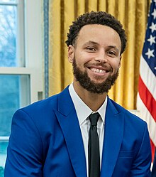

Stephen Curry
Wardell Stephen Curry II (/ˈstɛfən/ STEF-ən;[1] born March 14, 1988)[2] is an American professional basketball player and point guard for the Golden State Warriors of the National Basketball Association (NBA). Widely regarded as the greatest shooter, and one of the greatest players of all time, Curry is credited with revolutionizing the sport by inspiring teams and players to take more three-point shots.[3][4][5][6] He is a four-time NBA champion, a two-time NBA Most Valuable Player (MVP), an NBA Finals MVP, an NBA All-Star Game MVP, an NBA Clutch Player of the Year, and the inaugural NBA Western Conference Finals MVP. He is also a two-time NBA scoring champion, a ten-time NBA All-Star, and a ten-time All-NBA selection (including four on the First Team). Internationally, he has won two gold medals at the FIBA World Cup and a gold medal at the 2024 Summer Olympics as part of the U.S. men's national team.
Curry is the son of former NBA player Dell Curry and the older brother of current NBA player Seth Curry. He played collegiately for the Davidson Wildcats, where he set career scoring records for Davidson and the Southern Conference, and helped the Wildcats advance to the Elite Eight in 2008. He was named Conference Player of the Year twice, and set the NCAA single-season record for three-pointers made (162) during his sophomore year. Curry was selected by the Warriors as the seventh overall pick in the 2009 NBA draft.
In 2014–15, Curry won his first league MVP award and led the Warriors to their first championship since 1975. The following season, he became the first player to be elected MVP by a unanimous vote and lead the league in scoring while shooting above 50–40–90. That same year, the Warriors broke the record for the most wins in a regular season in NBA history (73) en route to the 2016 NBA Finals, which they lost to the Cleveland Cavaliers in Game 7. Curry helped the Warriors win back-to-back titles in 2017 and 2018, and reach the 2019 NBA Finals, losing to the Toronto Raptors in six games. Following injury struggles and missed playoff appearances in 2020 and 2021, Curry won his fourth championship with the Warriors and first Finals MVP award, defeating the Boston Celtics in the 2022 NBA Finals. The same season, he became the all-time leader in three-pointers made in NBA history, surpassing Ray Allen.[7]
Curry is the holder of numerous other records, notably for his efficiency and three-point shooting. He has the highest career free-throw percentage in NBA history (91.0%) and has led the league in three-pointers made a record eight times. In 2013, he set the NBA record for three-pointers made in a regular season with 272, surpassed that record in 2015 (286), and again in 2016 (402).
Early Life
Early life
Curry is the son of Sonya and Dell Curry. He was born in Akron, Ohio, at Summa Akron City Hospital, while his father was a member of the Cleveland Cavaliers.[8][9] He grew up in Charlotte, North Carolina, where his father spent most of his NBA career with the Charlotte Hornets.[10] Dell often took Curry and his younger brother Seth to his games, where they would shoot with the Hornets during warm-ups.[11] The family briefly moved to Toronto, where Dell finished out his career as a member of the Raptors.[10] During this time, Curry played for the Queensway Christian College boys' basketball team, leading them to an undefeated season.[12][13] He was also a member of Toronto 5–0, a club team that plays across Ontario,[14][15] pitting him against fellow future NBA players Cory Joseph and Kelly Olynyk.[15] Curry led the team to a 33–4 record, en route to winning the provincial championship.[16]
After Dell's retirement, the family moved back to Charlotte and Curry enrolled at Charlotte Christian School,[17] where he was named all-conference and all-state, and led his team to three conference titles and three state playoff appearances. Because of his father's storied career at Virginia Tech, Curry wanted to play college basketball for the Hokies, but was only offered a walk-on spot due in part to his slender 160-pound frame.[18] He ultimately chose to attend Davidson College, who had aggressively recruited him from the tenth grade.[19]
College Career
College career
Freshman season
Before Curry even played in his first game for the Wildcats, head coach Bob McKillop praised him at a Davidson alumni event, saying: "Wait 'til you see Steph Curry. He is something special."[20] In his first collegiate game against Eastern Michigan, Curry finished with 15 points but committed 13 turnovers. In the next game against Michigan, he scored 32 points, dished out four assists, and grabbed nine rebounds. Curry finished the season leading the Southern Conference in scoring with 21.5 points per game. He was second in the nation among freshmen in scoring, behind only Kevin Durant of Texas. Curry's scoring helped the Wildcats to a 29–5 overall record and a Southern Conference regular-season title. On March 2, 2007, in the Southern Conference tournament semi-finals against Furman, Curry made his 113th three-point field goal of the year, breaking Keydren Clark's NCAA freshman season record for three-pointers.[21]
Curry eclipsed the school freshman scoring record with his 502nd point against Chattanooga on February 6, 2007.[22] On March 15, 2007, Davidson marched into the NCAA tournament as a 13th seed set to play Maryland; despite Curry's game-high 30 points, Davidson lost 82–70.[23] At the end of his freshman season, Curry was named Southern Conference Freshman of the Year, SoCon Tournament MVP, and selected to the SoCon All-tournament team, All-freshman team, and All-SoCon First Team.[24] He was also an honorable mention in Sports Illustrated's All-Mid-Major. After the season ended, he was selected for the USA team to appear at the 2007 FIBA U-19 World Championships in which he averaged 9.4 points, 3.8 rebounds, and 2.2 assists in 19.4 minutes, helping Team USA to a silver medal finish.[25]
Sophomore season

In his sophomore season in 2007–08, Curry had grown to his adult height of 6 ft 2 in (1.88 m) and again led the Southern Conference in scoring, averaging 25.5 points per game while adding 4.7 rebounds per game and 2.8 assists per game. He led the Wildcats to a 26–6 regular-season record and a 20–0 conference record. As a result of Curry's exceptional play, Davidson earned its third straight NCAA tournament bid.
On March 21, 2008, Davidson matched up with seventh-seeded Gonzaga. Gonzaga led by 11 points early in the second half but Curry went on to score 30 points in the half[26] to push Davidson to their first NCAA Tournament win since 1969 with a score of 82–76. Curry ended the game with 40 points while also going 8-for-10 from three-point range.[27] On March 23, Davidson played second-seeded Georgetown in the second round of the NCAA Tournament. Georgetown was ranked eighth nationally and entered the game as a heavy favorite after an appearance in the Final Four in 2007. Curry managed just five points in the first half of the game as Davidson trailed by as many as 17 points, but his 25 second-half points led Davidson to a 74–70 comeback victory.[26]
On March 28, 2008, Curry led Davidson to another win, against third-seeded Wisconsin. Curry scored 33 points as Davidson won 73–56 to advance to the Elite 8.[28] Curry joined Clyde Lovellette, Jerry Chambers, and Glenn Robinson as the only college players to score over 30 points in their first four career NCAA tournament games.[28] Curry also tied Darrin Fitzgerald of Butler for the single-season record for most three-pointers with 158.[29][30] On March 30, 2008, he set the record, against the top-seeded Kansas Jayhawks, with his 159th three-pointer of the season. Curry scored 25 points in the game but Davidson lost 59–57, and the Jayhawks went on to win the championship.[31]
Curry finished the season averaging 25.9 points, 2.9 assists, and 2.1 steals per game. He was named to the Associated Press' All-America Second Team on March 31, 2008.[32] He also was named the Most Outstanding Player of the Midwest Region of the 2008 NCAA tournament, becoming the first player from a team not making the Final Four to do so since Juwan Howard of Michigan in 1994.[33] Curry was nominated for an ESPY in the Breakthrough Player of the Year category.[34]
Junior season
After Davidson's loss against Kansas in the NCAA Regional Finals, Curry announced that he would return for his junior year.[29] He stated that he wanted to develop as a point guard, his likely position in the NBA. On November 18, 2008, Curry scored a career-high 44 points in Davidson's 82–78 loss to Oklahoma.[35] He extended a career-long streak by scoring at least 25 points for the seventh straight game.[35] On November 21, Curry registered a career-high 13 assists, to go along with 30 points in Davidson's 97–70 win over Winthrop.[36] On November 25, against Loyola, Curry was held scoreless as Loyola constantly double-teamed him. It was Curry's only scoreless collegiate game and just his second without double-digit points. He finished 0-for-3 from the field as Davidson won the game 78–48.[37] In Davidson's next game 11 days later, Curry matched his career high of 44 in a 72–67 win over North Carolina State.[38]
Curry surpassed the 2000-point mark for his career on January 3, 2009, as he scored 21 points against Samford.[39] On February 14, 2009, Curry rolled his ankle in the second half of a win over Furman. The injury caused Curry to miss the February 18 game against The Citadel, the first and only game he missed in his college career.[40] On February 28, 2009, Curry became Davidson's all-time leading scorer with 34 points in a 99–56 win against Georgia Southern. That gave Curry 2,488 points for his career, surpassing previous school leader John Gerdy.[41] Davidson won the 2008–09 Southern Conference regular season championship for the south division, finishing 18–2 in the conference.[42][43]
In the 2009 Southern Conference tournament, Davidson played Appalachian State in the quarterfinals and won 84–68. Curry scored 43 points, which is the third most points in Southern Conference tournament history.[44] In the semifinals, against the College of Charleston, Curry had 20 points but Davidson lost 52–59. Despite lobbying from Davidson head coach Bob McKillop and Charleston coach Bobby Cremins,[45] the Wildcats failed to get an NCAA tournament bid. Instead, they received the sixth seed in the 2009 NIT. Davidson played the third seed, South Carolina, on the road in the first round. Curry scored 32 points as the Wildcats beat the Gamecocks 70–63.[46][47] Davidson then lost 80–68 to the Saint Mary's Gaels in the second round. Curry registered 26 points, nine rebounds, and five assists in what was his final game for the Wildcats.[48]
In his final season at Davidson, Curry averaged 28.6 points, 5.6 assists, and 2.5 steals. He was the NCAA scoring leader and was named a consensus first team All-American.[49] Curry opted out of his senior year at Davidson, but he stated that he still planned to earn his degree.[50] He completed his bachelor's degree in sociology in May 2022.[51] Curry's completion of his degree qualified him for jersey or number retirement; Davidson reserves that honor for players who complete their degrees at the school. In a ceremony held on August 31, 2022, Curry became the first Davidson player to have his number retired (six others have jerseys retired, but their numbers remain in circulation). At the ceremony, he also entered Davidson's athletic hall of fame and physically received his Davidson diploma.[52][53]
Professional Career
Professional Career
Early years (2009-2012)
On June 25, 2009, his father's 45th birthday, Curry was selected as the seventh overall pick in the 2009 NBA draft by the Golden State Warriors.[54] Although the Warriors already had another lean, 6-foot-3, offensive-minded guard in Monta Ellis, coach Don Nelson had a penchant for using small lineups in his Nellie Ball system, and had warmed to the idea of selecting Curry.[55][56] However, Ellis announced at a media session that he and Curry were too small to play together.[57] Curry appeared in 80 games (77 starts) during the 2009–10 season, averaging 17.5 points, 4.5 rebounds, 5.9 assists, and 1.90 steals in 36.2 minutes.[58] His second half of the season vaulted him into the rookie of the year race.[59] He was named Western Conference Rookie of the Month for January, March, and April, finishing as the only Western Conference rookie to win the award three times.[58] He finished runner-up for the NBA Rookie of the Year Award behind Tyreke Evans[59] and was a unanimous NBA All-Rookie First Team selection, becoming the first Warriors player since Jason Richardson in 2001–02 to earn All-Rookie First Team honors.[58] He scored 30-plus points eight times, setting the most 30-point games by any rookie in 2009–10 and the most since LeBron James had 13 and Carmelo Anthony had 10 in 2003–04. Curry had five 30-point/10-assist games, which tied Michael Jordan for the second-most 30-point/10-assist games by a rookie (Oscar Robertson is first with 25). He became just the sixth rookie in NBA history to post a 35-point, 10-assist, 10-rebound game when he registered his first career triple-double with 36 points, 13 assists, and 10 rebounds against the Los Angeles Clippers on February 10. In the Warriors' season finale against the Portland Trail Blazers on April 14, Curry recorded a then- career-high 42 points, nine rebounds and eight assists, becoming the first rookie since Robertson in February 1961 to register at least those numbers in each category in the same game. Curry finished his rookie season with 166 three-pointers, which were, at the time, the most ever by a rookie in NBA history.[58]

In 2010–11, Curry appeared in 74 games (all starts), averaging 18.6 points, 3.9 rebounds, 5.8 assists, and 1.47 steals in 33.6 minutes per contest.[58] His free throw percentage of .934 (212–227 FT) set a new Warriors single-season record, surpassing the previous mark of .924 set by Rick Barry in 1977–78. He also became the first Warriors player to lead the NBA in free throw percentage since Mark Price in 1996–97.[58] Curry registered 20-or-more points 35 times, including seven 30-plus performances. He posted a season-high 39 points and a then- career-high 14 made field goals (on 20 attempts) against the Oklahoma City Thunder on December 5. In February 2011, during All-Star Weekend, Curry won the Skills Challenge[60] and registered 13 points, eight assists, and six rebounds in 28 minutes as a member of the Sophomore squad in the Rookie Challenge.[58] In May 2011, he was named the recipient of the NBA Sportsmanship Award,[61] and underwent surgery on his right ankle.[62]
In the lockout-shortened 2011–12 season, Curry appeared in 26 games (23 starts), averaging 14.7 points, 3.4 rebounds, 5.3 assists, and 1.50 steals in 28.2 minutes per contest. He missed 40 games due to right ankle and foot injuries,[58] including the last 28 games with a sprained right ankle and subsequent surgery on the ankle, which was performed on April 25.[63] In 2012, Golden State included Curry in a trade offer to the Milwaukee Bucks for Andrew Bogut, which the Bucks rejected due to Curry's history with bad ankles. Ellis was traded instead.[64][65][66] According to then- Warriors general manager Larry Riley, they offered Curry with the intention of steering the deal to Ellis.[65] The deal opened an opportunity for Curry to lead the team.[57]